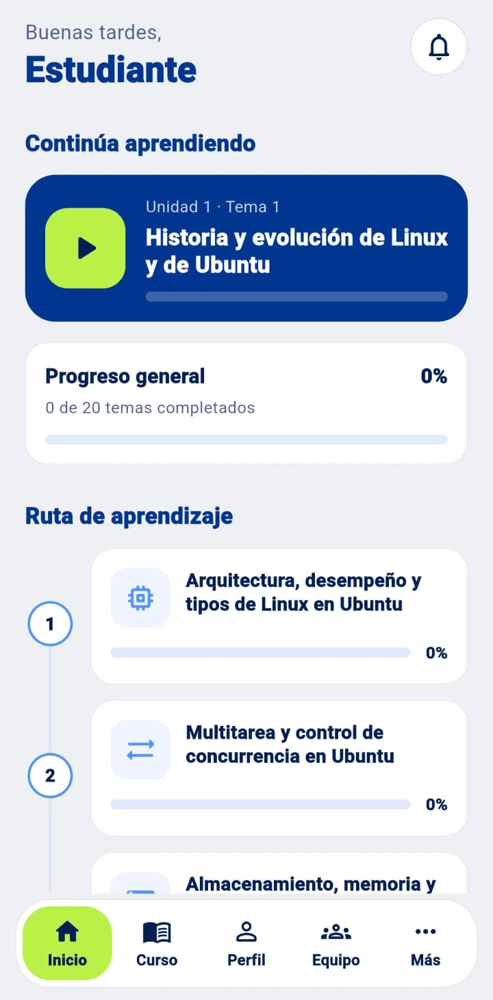
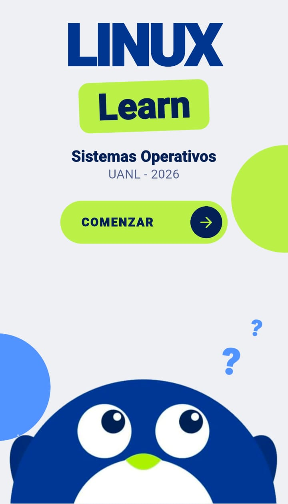
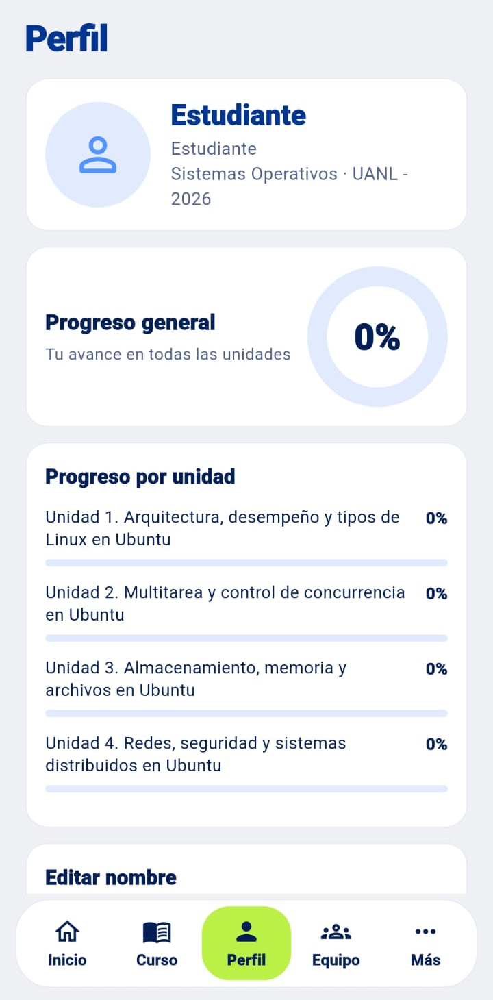

Organizada por unidades
Cuatro unidades y 20 temas forman una ruta de aprendizaje para avanzar de un tema al siguiente sin perderte.
Universidad Autónoma de Nuevo León Facultad de Ingeniería Mecánica y Eléctrica UANL · FIME
$ learn --linux
Domina Linux paso a paso, desde tu teléfono.
Una aplicación educativa diseñada para facilitar el aprendizaje de Linux y los conceptos fundamentales de los sistemas operativos mediante contenidos organizados por unidades.

Características
Un recorrido ordenado por los temas de Linux y de sistemas operativos, pensado para estudiar a tu ritmo.
Cuatro unidades y 20 temas forman una ruta de aprendizaje para avanzar de un tema al siguiente sin perderte.
Conoce la historia, la arquitectura y los tipos de Linux, con Ubuntu como sistema de referencia.
Multitarea, concurrencia, memoria, almacenamiento, redes y seguridad, como apoyo a la materia.
Instala la app con el archivo APK y consulta tu avance general y por unidad desde tu teléfono.
Vista previa
Algunas pantallas de la aplicación en su versión actual.


Descargar
Descarga el archivo APK e instálalo directamente en tu dispositivo Android.
Descargar APKLa descarga estará disponible cuando se publique la primera versión en GitHub Releases.
Pulsa el botón de descarga desde tu teléfono Android.
Búscalo en la notificación de descarga o en la carpeta Descargas.
Si Android lo pide, autoriza instalar apps desde esa fuente (navegador o administrador de archivos).
Pulsa «Instalar» y, al terminar, abre LINUX Learn.
Como la app no se distribuye por Google Play, Android puede mostrar un aviso de seguridad. Descárgala únicamente desde esta página oficial del proyecto.
Acerca del proyecto
LINUX Learn se desarrolló como proyecto académico para la materia de Sistemas Operativos en la Facultad de Ingeniería Mecánica y Eléctrica de la Universidad Autónoma de Nuevo León.
Su objetivo es ofrecer a los estudiantes una herramienta de apoyo para comprender Linux y los fundamentos de los sistemas operativos desde un dispositivo móvil.